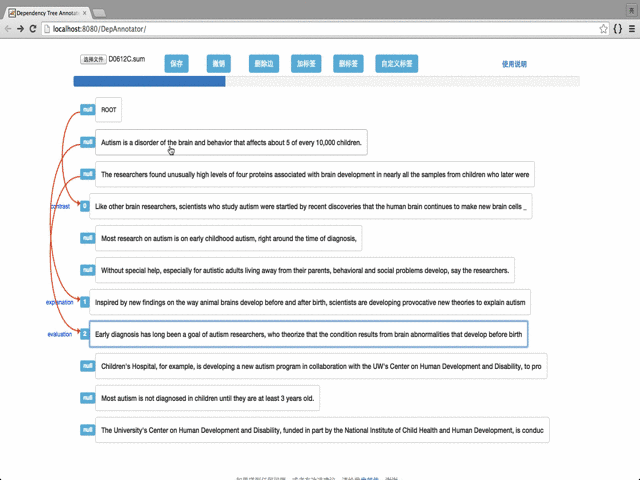
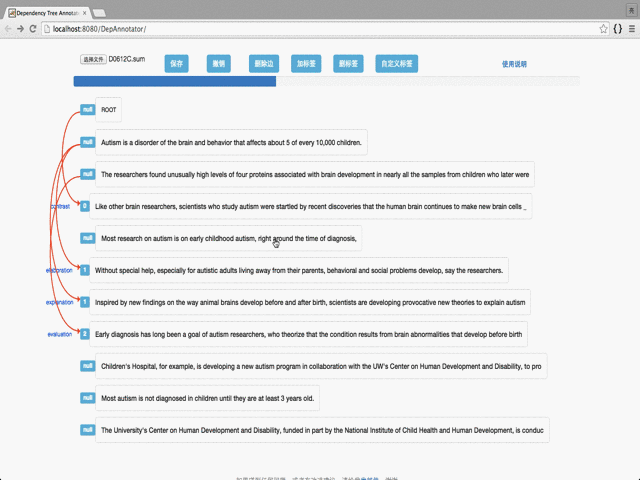

1. 加载数据文件：点击“选择文件”按钮选择文本文件，每行为一个基本单元。
2. 标注：鼠标先单击父节点，然后单击子节点，在弹出的对话框中选择标注关系。如下图所示：

3. 保存：点击“保存”按钮即可，保存的结果为.dep为后缀的json数据，可以直接加载。
4. 添加新标签： 点击“加标签”按钮，输入要添加的标签名称，中英文均可。
5. 删除标签： 点击“删标签”按钮，点击要删除的标签。
6. 撤销上一步骤：点击“撤销”按钮即可，会撤销单击操作、删除操作、标注操作。
7. 删除边：点击要删除的边所指向的节点，然后点击“删标签”按钮。如下图所示：
